Interface Sketch and Caption:
This interface works to solve how a coffee shop, Bolt, processes the payments of its customers. The interface operates with one large touch screen, offering payment options of Apple Pay, card insertion, card touch, Cash App and cash. The Apple Pay and card touch options are exhibited using a clear image at the top of the interface and a tap label with an arrow indicating towards it. There is a qr code on the right center of the interface so that customers can download the Cash App on the spot and pay that way. There is an image of the top of a credit card, as well as arrows directing the user to a credit card insertion point for the insertion option. The option to pay with cash is not exhibited explicitly on the interface.

 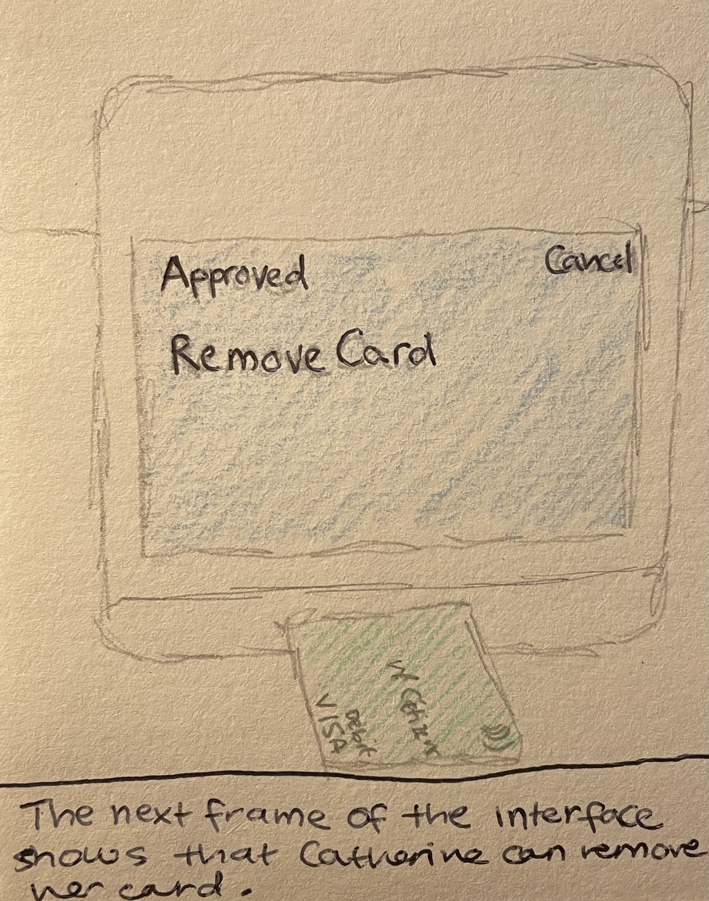
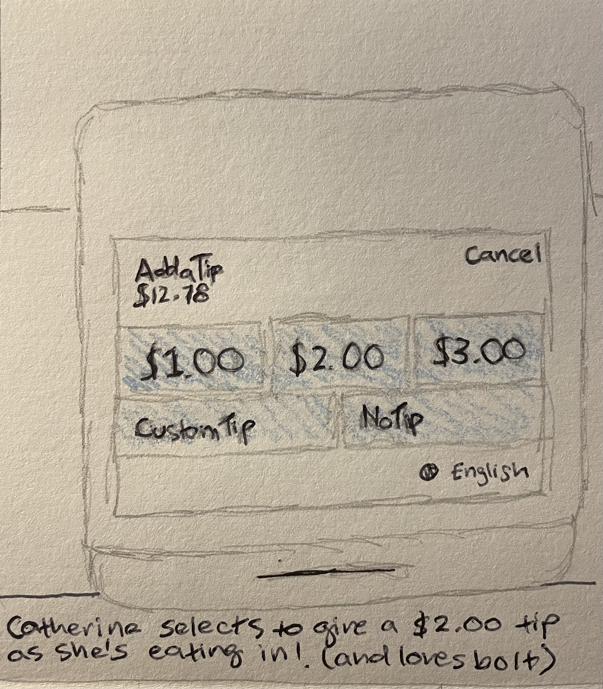
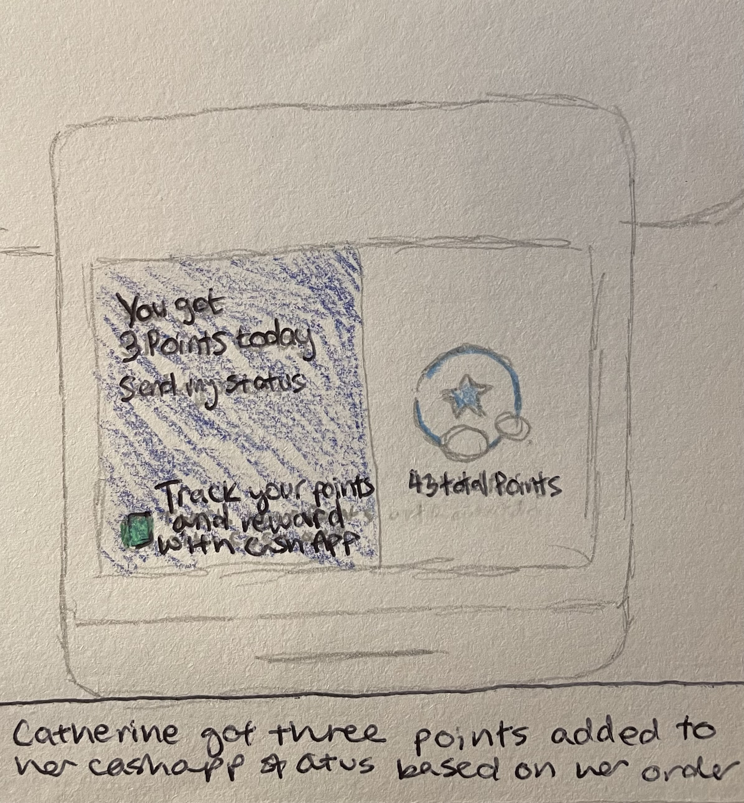
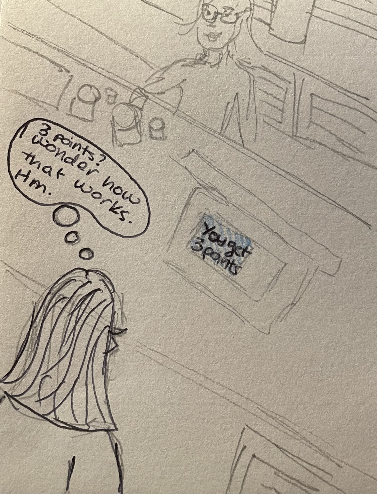
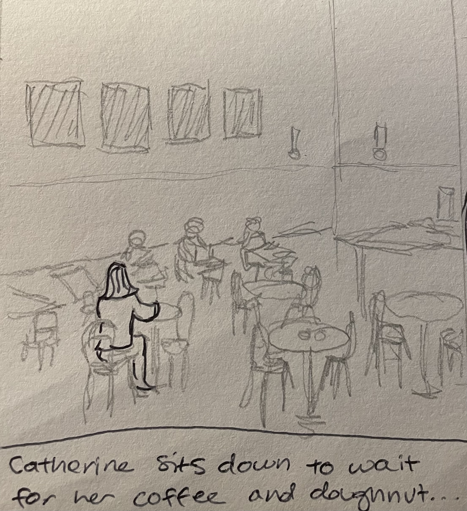
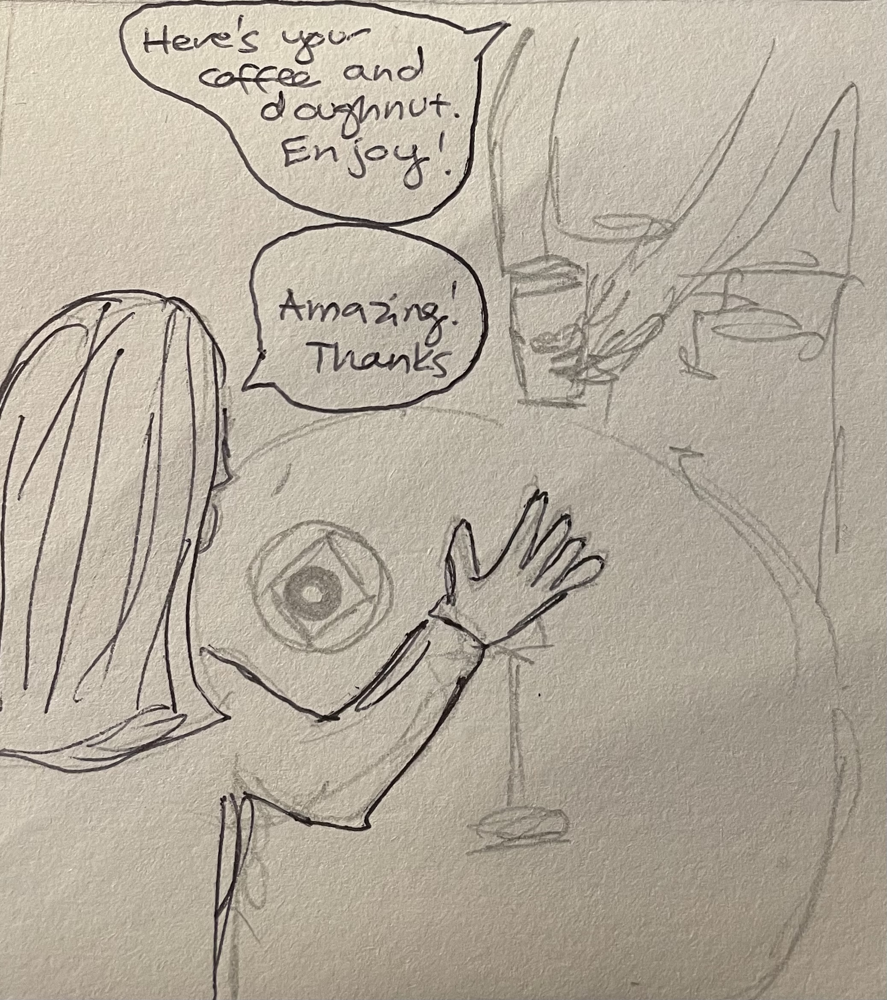
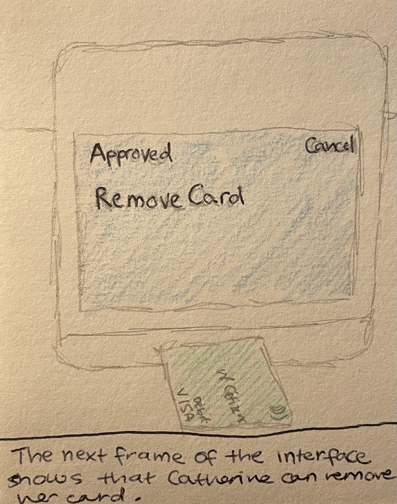
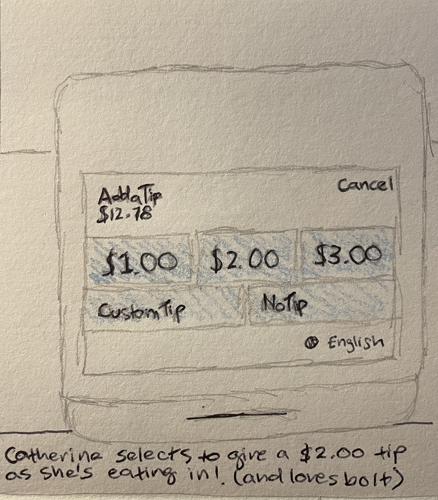
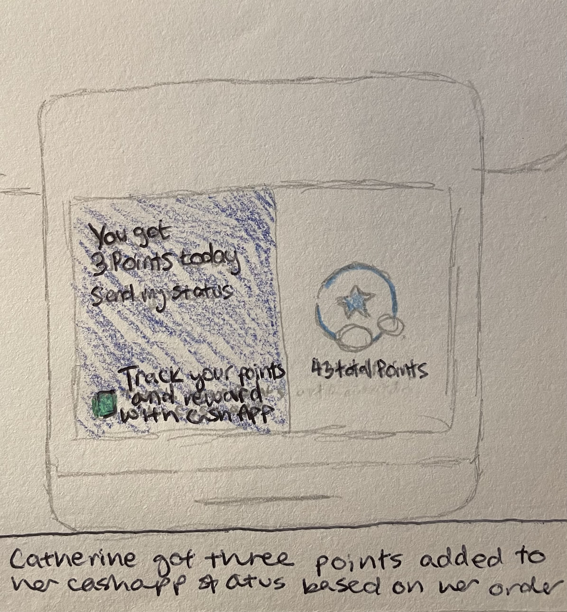
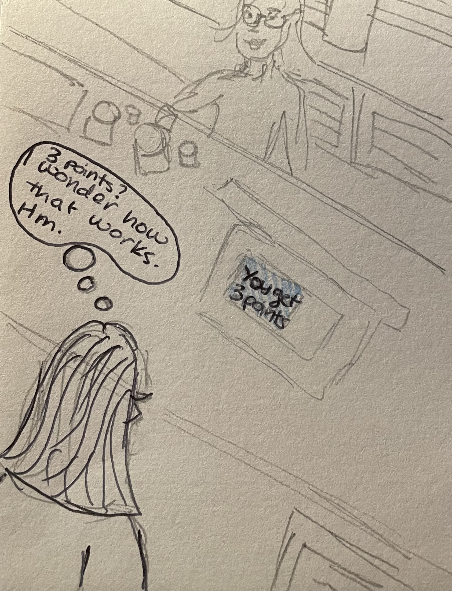
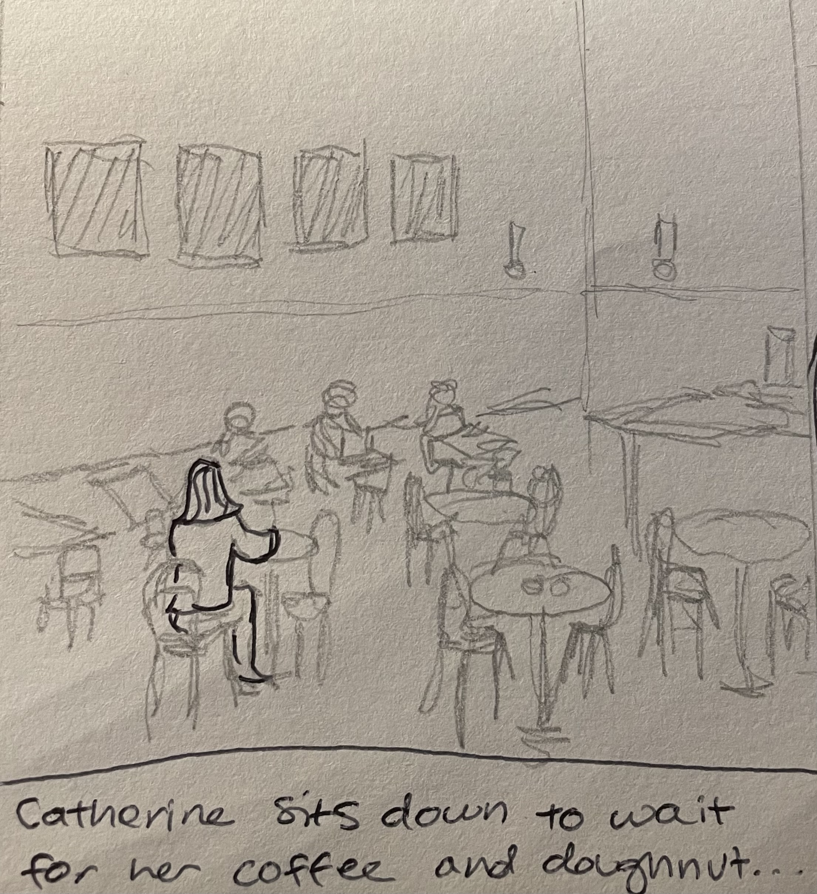
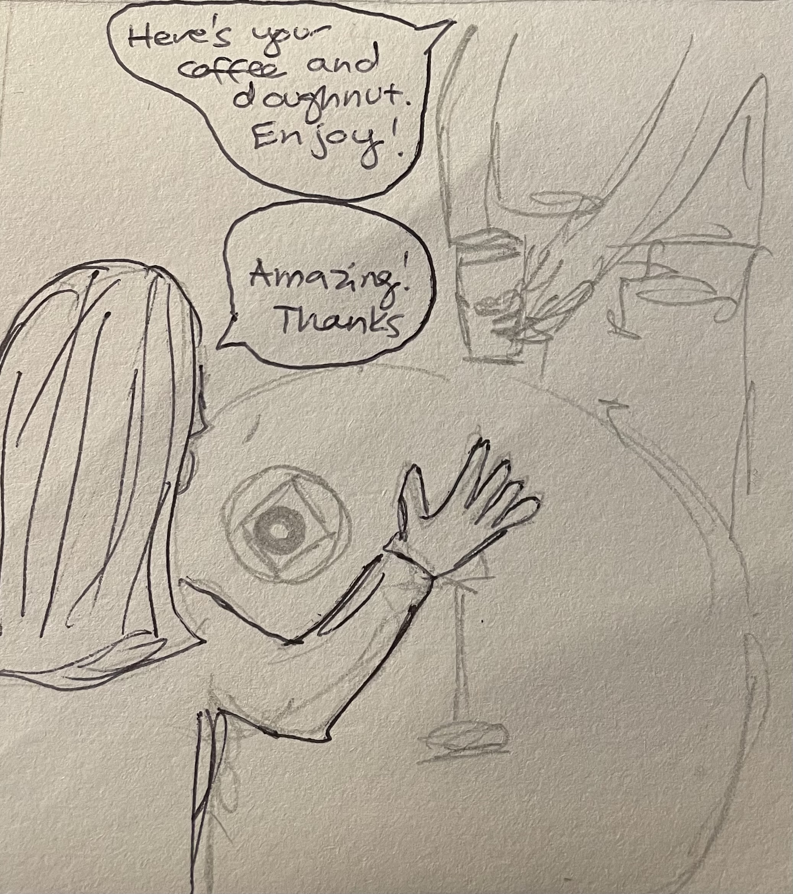